Pinterest05
As the baby freshman I was, the thoughts of post-grad and a full-time career were practically non-existent. It didn't help that at the time, I didn't know what I wanted to study nor what I wanted to do in the future. Come's in one of my upperclassmen friends who invited me to their company's headquarters in San Francisco. Picked me up, crossed the bridge, and got to see the insanity of the place he worked at. The only exposure I had to jobs were the desk jobs my parents held (which I will always be grateful for), but this was just unbelievable. Food bars, stylish and modern furniture, comfortable work spaces, people constantly interacting with one another, and a beautiful view at the rooftop. Such simple thing now that I'm looking back, but is all that it took for me to become determined to work at place like there and eventually kick-start my professional journey as a little freshman.
Meet the Pam04
The first group in Berkeley I've felt really close to. My pam (short for "pamilya" which means family in Tagalog), is a big/little kind of thing. When I became a little in my pam back in my first semester in Cal, I got the chance to meet a bunch of my bigs, all of which were upperclassmen that were all insanely amazing. Whether it be in regards to the work they do, what they've accomplished, places they've been, the wisdom they had, or just how, for lack of a better word, cool they were. From driving me out to their favorite food places outside Berkeley, to bringing me food when I was sick. From teaching me how to apply for EBT to housing me when I was kicked out of the dorms once May hit. From being some of my first friends in Berkeley to friends I hope to have for the rest of my life. Much love.
Dorm Life03
Lights off, headset on—times in Freeborn 811. With a TV under the loft, RGB lightbulb for the ambience, a view of the sun setting from the topmost floor facing the hills, and two semi-cool roommates (just kidding, love you guys), my time at the dorm was always laid-back fun. Studying, listening to music, watching weekly shows together, getting an occasional #1 Victory Royale—just a blast of nostalgia.
 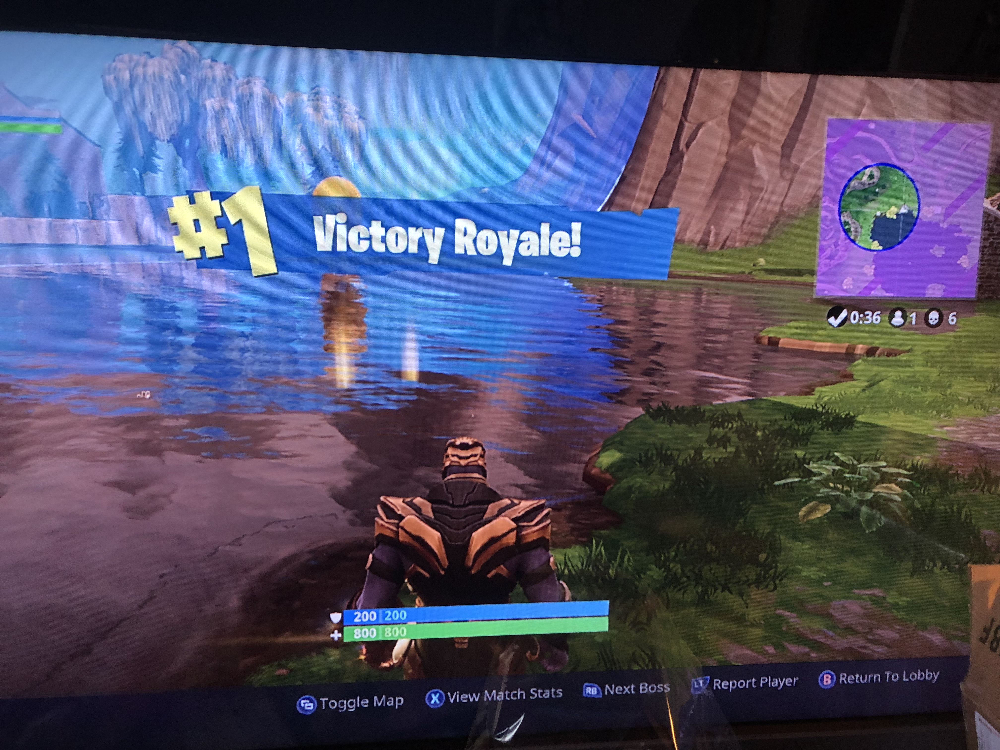
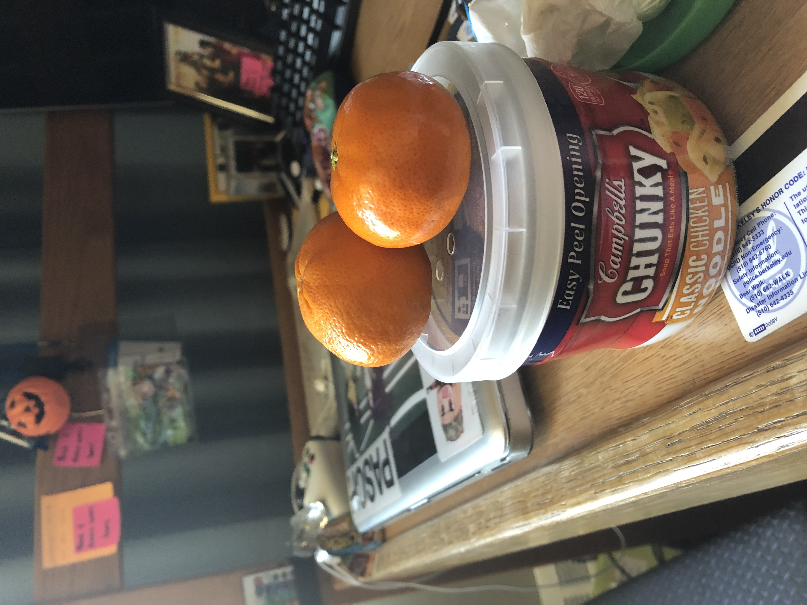
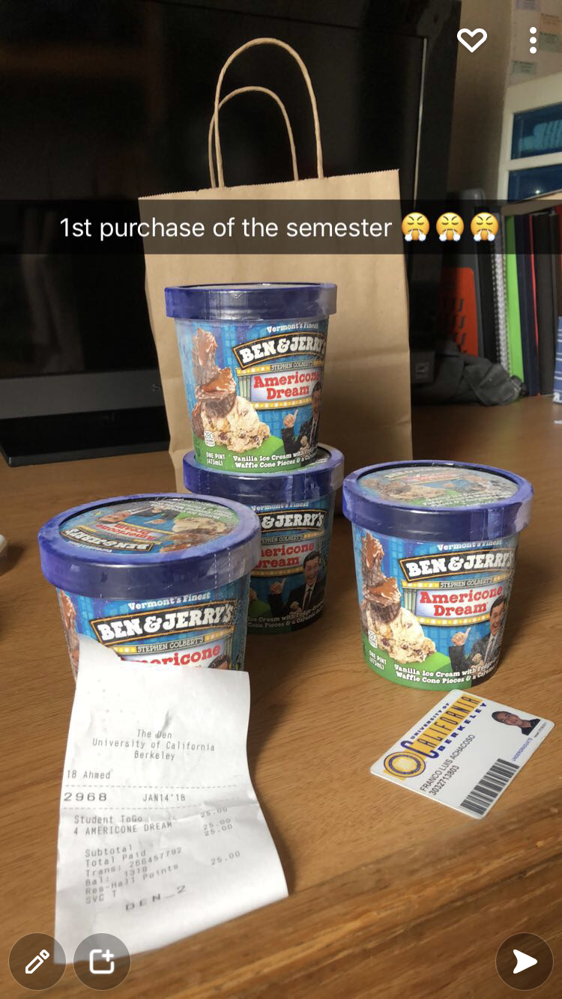
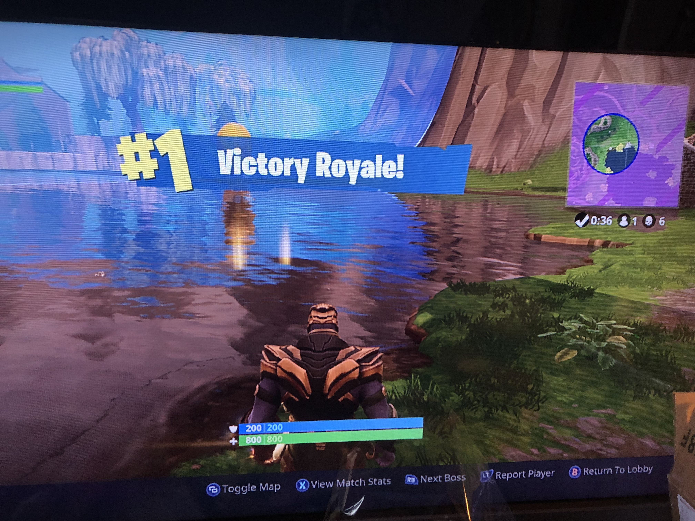
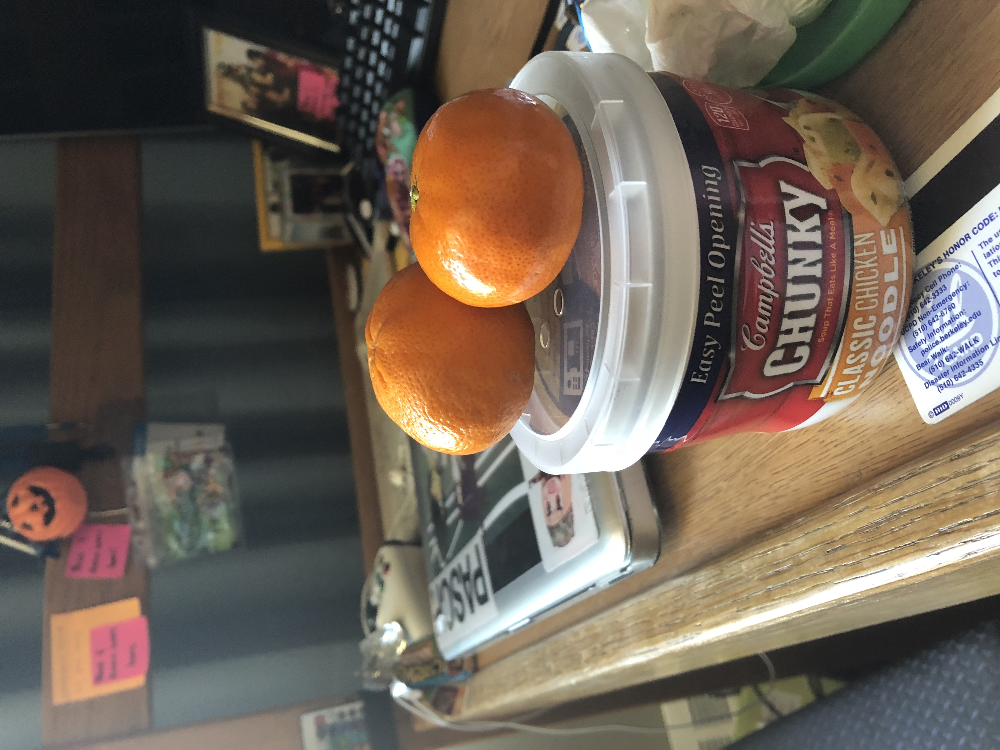
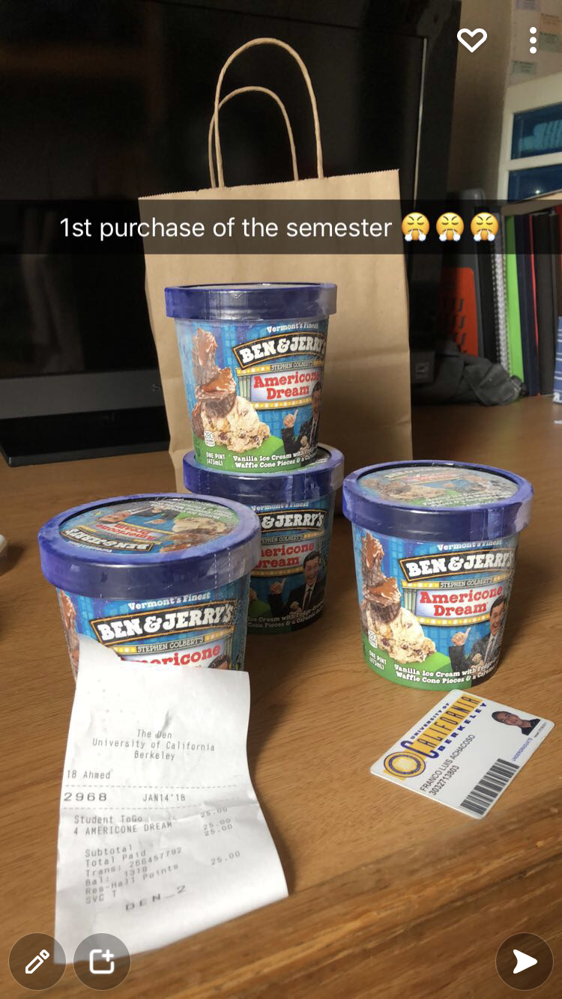
Avalon Club02
Every week I'd go to a club's weekly game nights to have fun and meet new people. Eventually we came across a game called Avalon, a social deduction game involving figuring out who out of the group is evil. Me and some people I met there enjoyed playing this game so much that we'd eventually keep on playing outside the club after game night was over, often up until questionable hours of the night, thus creating "Avalon Club". We'd all see each other outside game nights, not just to play Avalon, but to play other board games, playing Super Smash, eating out, and hanging out. All the good friends I've made and the good memories with those people all started off with Avalon.
 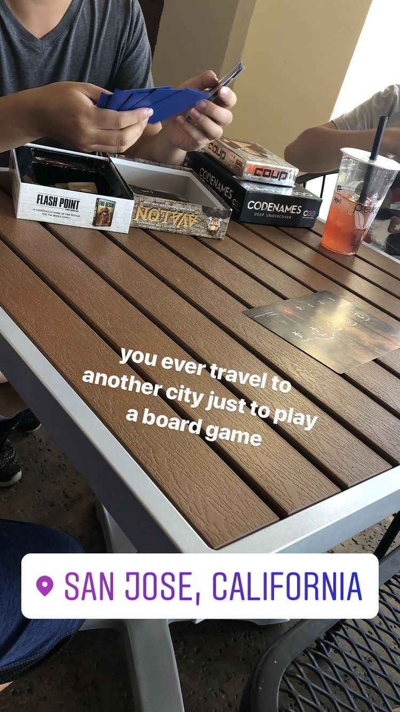
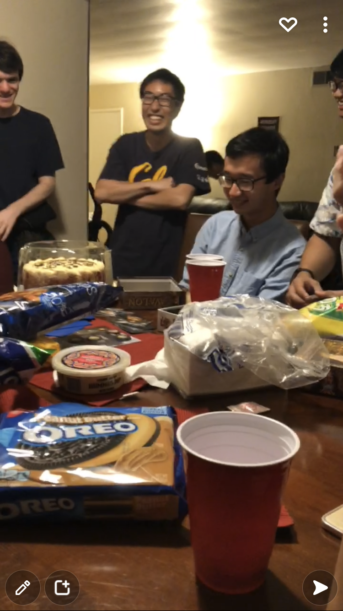
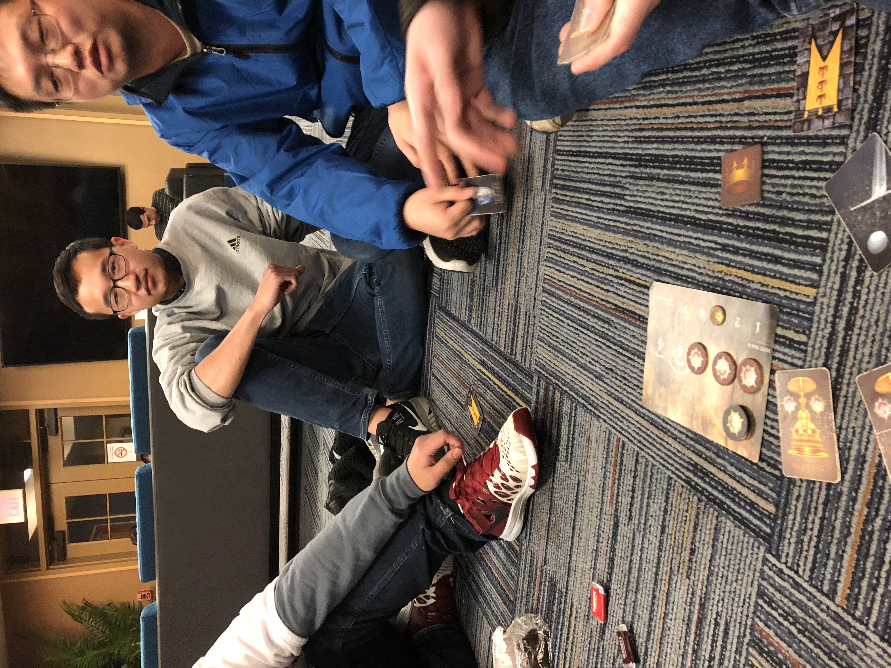
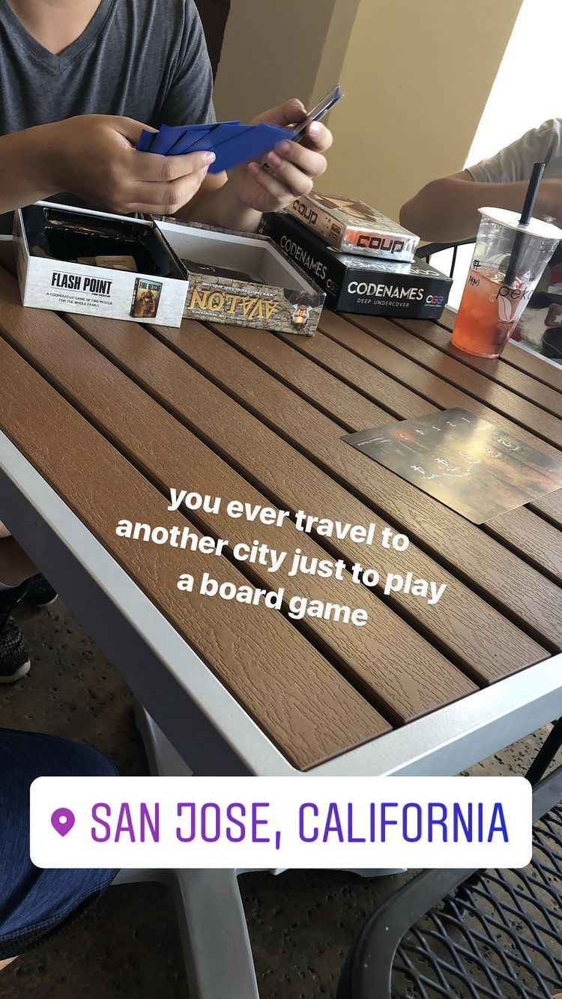
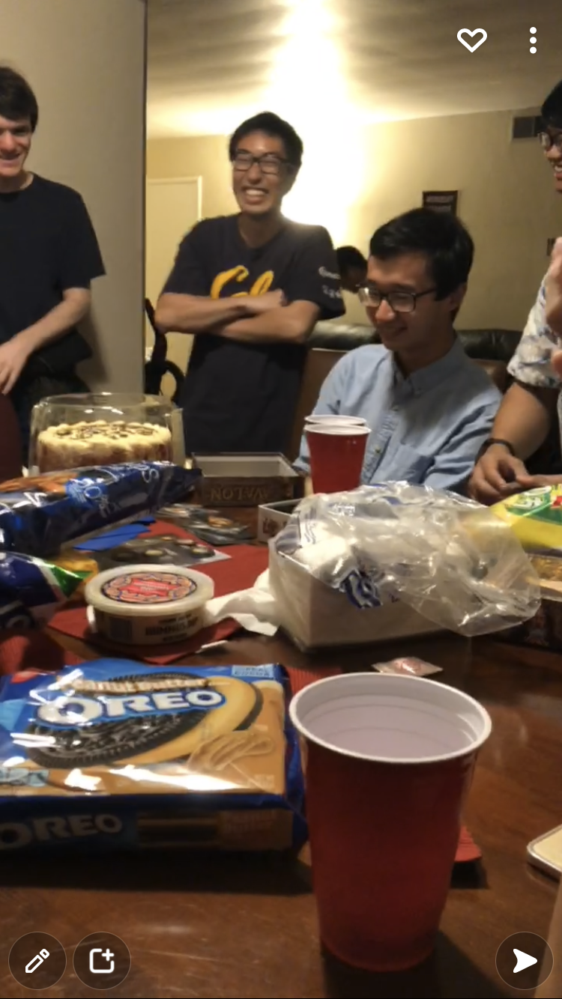
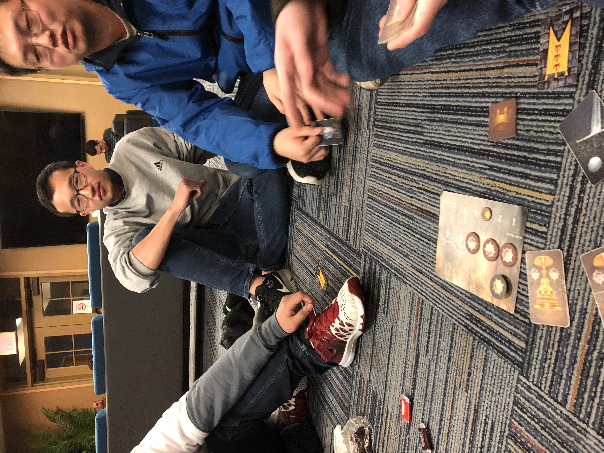

Senior Weekend01
As a senior in high school who just got accepted into UC Berkeley, I was dead set on going there. But alongside the determination was a huge amount of insecurity, especially being the first in my family to go to a 4-year university. Concerns in cost of attendance, keeping up with the academic rigor of the "#1 public university", and ability to actually move to a completely new area from a place I've lived my whole life. Then came an invitation from an outreaching organization from Berkeley who bought me a ticket to come visit the campus, interact with actual students, and come see what life would be with UC Berkeley as my new home. It was because of the experience I had during senior weekend that I SIR'ed. Fast forward a year later, I had an opportunity to give people who were in the exact same shoes as me the year before that same experience. We showed them around campus, took them to our favorite places to eat, housed them as we stayed up late playing random board games(Avalon mostly) and talking about things both stupid and deep, and really just give them the confidence to feel like they can succeed in UC Berkeley. Much love to my fellow mentors Lauren and CJ, as well as love to the baby bears Floriedaine, Ryan, and Avi.
I Wish I Missed My Ex05
Mahalia
Make It Better04
Anderson .Paak ft Smokey Robinson
Needy03
Ariana Grande
Midsummer Madness02
88rising
Love Affair01
Umi